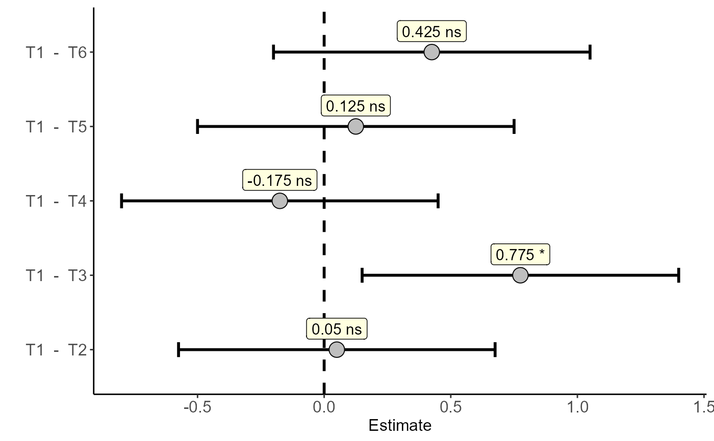
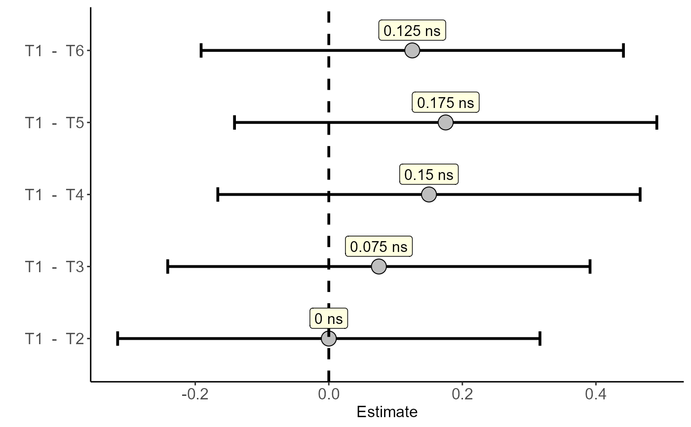
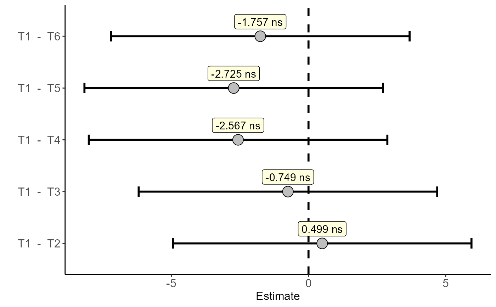
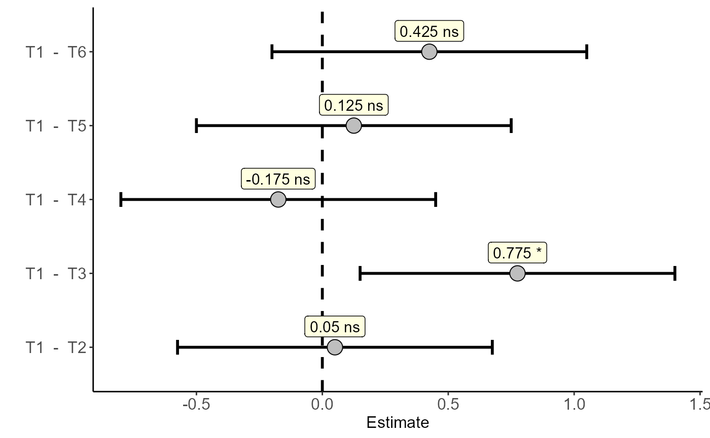
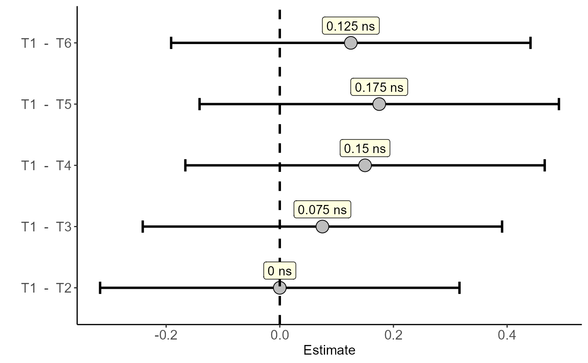
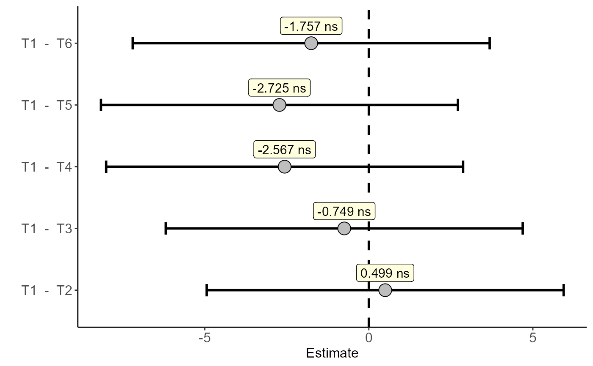

Utils: Dunnett's Test Summary
summarise_dunnett.RdPerforms a summary in table form from a list of Dunnett's test outputs
summarise_dunnett(variable, colnames = NA, info = "sig")Arguments
- variable
List object Dunnett test
- colnames
Names of column
- info
Information of table
Value
A summary table from Dunnett's test is returned
Examples
library(AgroR)
data("pomegranate")
a=with(pomegranate,dunnett(trat=trat,resp=WL,control="T1"))
#> Estimate IC-lwr IC-upr t value p-value sig
#> T1 - T2 -0.1650 -0.6432639 0.3132639 -0.9528 0.8035 ns
#> T1 - T3 0.7750 0.2967361 1.2532639 4.4753 0.0014 *
#> T1 - T4 0.7775 0.2992361 1.2557639 4.4898 0.0015 *
#> T1 - T5 0.7950 0.3167361 1.2732639 4.5908 0.0010 *
#> T1 - T6 0.3200 -0.1582639 0.7982639 1.8479 0.2665 ns
 b=with(pomegranate,dunnett(trat=trat,resp=SS,control="T1"))
#> Estimate IC-lwr IC-upr t value p-value sig
#> T1 - T2 0.050 -0.5750432 0.6750432 0.2209 0.9996 ns
#> T1 - T3 0.775 0.1499568 1.4000432 3.4234 0.0128 *
#> T1 - T4 -0.175 -0.8000432 0.4500432 -0.7730 0.8990 ns
#> T1 - T5 0.125 -0.5000432 0.7500432 0.5522 0.9717 ns
#> T1 - T6 0.425 -0.2000432 1.0500432 1.8773 0.2546 ns

c=with(pomegranate,dunnett(trat=trat,resp=AT,control="T1"))
#> Estimate IC-lwr IC-upr t value p-value sig
#> T1 - T2 -4.845751e-16 -0.3161925 0.3161925 0.0000 1.0000 ns
#> T1 - T3 7.500000e-02 -0.2411925 0.3911925 0.6547 0.9446 ns
#> T1 - T4 1.500000e-01 -0.1661925 0.4661925 1.3093 0.5685 ns
#> T1 - T5 1.750000e-01 -0.1411925 0.4911925 1.5275 0.4304 ns
#> T1 - T6 1.250000e-01 -0.1911925 0.4411925 1.0911 0.7154 ns

d=with(pomegranate,dunnett(trat=trat,resp=ratio,control="T1"))
#> Estimate IC-lwr IC-upr t value p-value sig
#> T1 - T2 0.4989177 -4.942001 5.939837 0.2532 0.9992 ns
#> T1 - T3 -0.7493146 -6.190233 4.691604 -0.3802 0.9943 ns
#> T1 - T4 -2.5667388 -8.007658 2.874180 -1.3024 0.5731 ns
#> T1 - T5 -2.7251984 -8.166117 2.715720 -1.3828 0.5202 ns
#> T1 - T6 -1.7567641 -7.197683 3.684155 -0.8914 0.8391 ns

summarise_dunnett(list(a,b,c,d))
#> Var 1 Var 2 Var 3 Var 4
#> T1 - T2 ns ns ns ns
#> T1 - T3 * * ns ns
#> T1 - T4 * ns ns ns
#> T1 - T5 * ns ns ns
#> T1 - T6 ns ns ns ns
b=with(pomegranate,dunnett(trat=trat,resp=SS,control="T1"))
#> Estimate IC-lwr IC-upr t value p-value sig
#> T1 - T2 0.050 -0.5750432 0.6750432 0.2209 0.9996 ns
#> T1 - T3 0.775 0.1499568 1.4000432 3.4234 0.0128 *
#> T1 - T4 -0.175 -0.8000432 0.4500432 -0.7730 0.8990 ns
#> T1 - T5 0.125 -0.5000432 0.7500432 0.5522 0.9717 ns
#> T1 - T6 0.425 -0.2000432 1.0500432 1.8773 0.2546 ns

c=with(pomegranate,dunnett(trat=trat,resp=AT,control="T1"))
#> Estimate IC-lwr IC-upr t value p-value sig
#> T1 - T2 -4.845751e-16 -0.3161925 0.3161925 0.0000 1.0000 ns
#> T1 - T3 7.500000e-02 -0.2411925 0.3911925 0.6547 0.9446 ns
#> T1 - T4 1.500000e-01 -0.1661925 0.4661925 1.3093 0.5685 ns
#> T1 - T5 1.750000e-01 -0.1411925 0.4911925 1.5275 0.4304 ns
#> T1 - T6 1.250000e-01 -0.1911925 0.4411925 1.0911 0.7154 ns

d=with(pomegranate,dunnett(trat=trat,resp=ratio,control="T1"))
#> Estimate IC-lwr IC-upr t value p-value sig
#> T1 - T2 0.4989177 -4.942001 5.939837 0.2532 0.9992 ns
#> T1 - T3 -0.7493146 -6.190233 4.691604 -0.3802 0.9943 ns
#> T1 - T4 -2.5667388 -8.007658 2.874180 -1.3024 0.5731 ns
#> T1 - T5 -2.7251984 -8.166117 2.715720 -1.3828 0.5202 ns
#> T1 - T6 -1.7567641 -7.197683 3.684155 -0.8914 0.8391 ns

summarise_dunnett(list(a,b,c,d))
#> Var 1 Var 2 Var 3 Var 4
#> T1 - T2 ns ns ns ns
#> T1 - T3 * * ns ns
#> T1 - T4 * ns ns ns
#> T1 - T5 * ns ns ns
#> T1 - T6 ns ns ns ns